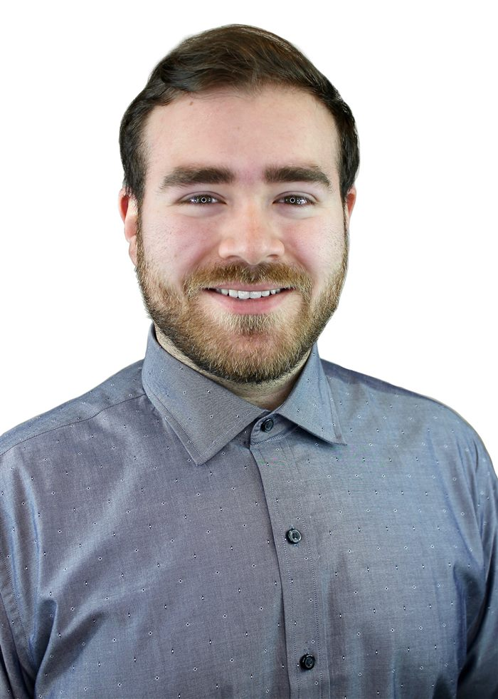

Muhammad Khas
Security engineer working across endpoint, network, and identity threats - from first alert to root cause.
I spend my days triaging real incidents under time pressure, then spend the time after asking why the process let them get that far - and fixing that part too.
About
01I started in science as a biology major, but I always had a knack for computers and for figuring things out. I loved the "magic" of it all - seamless games and party chats, digging into why I lagged more on Modern Warfare than on CS:GO. Security was the constant annoyance: I grew up in a PSN household, and a few weeks a year PSN would get hacked or taken down. It took me three years to realize I was meant to be in IT, so I made the switch and started grinding. After earning my Security+, I realized the biggest gap usually wasn't a technology gap, it was a learning gap. Teaching had always been part of the job as my household's tech support engineer. Cybersecurity felt like the right fit: protecting people and keeping data secure, accurate, and available. That curiosity has carried through a B.S. in Cybersecurity from George Mason, a handful of AWS and CompTIA certifications, and three roles that moved me from general IT support into dedicated security work.
At Arctic Wolf, I triage endpoint, network, and identity alerts for customers who are often in the middle of a bad day. I try to leave every ticket in better shape than I found it - clear evidence, a real explanation, and a fix that holds up. When I notice the same gap causing repeat problems, I write it up and push it through as a process or product fix rather than solving it quietly one ticket at a time. I drive results by turning challenges into actionable strategies.
Outside the queue, I care a lot about the people I work alongside. I'm a natural mentor. As soon as I learn to do something, I'm excited to share the knowledge and make everyone's days a little bit easier. I lead cultural and community events at work - Diwali, Lunar New Year, Eid, and helping to drive any initiative that my colleagues have as well - because I think a team works better when people actually know each other and strive to create camaraderie. I was recognized company-wide with Arctic Wolf's Golden Wolf award for that work. An award honoring meaningful impact, collaboration, leadership, and execution. To me, the recognition represents more than the outcome itself - it reflects the ability to lead, collaborate, and turn meaningful ideas into results.